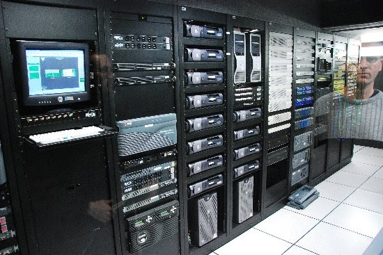
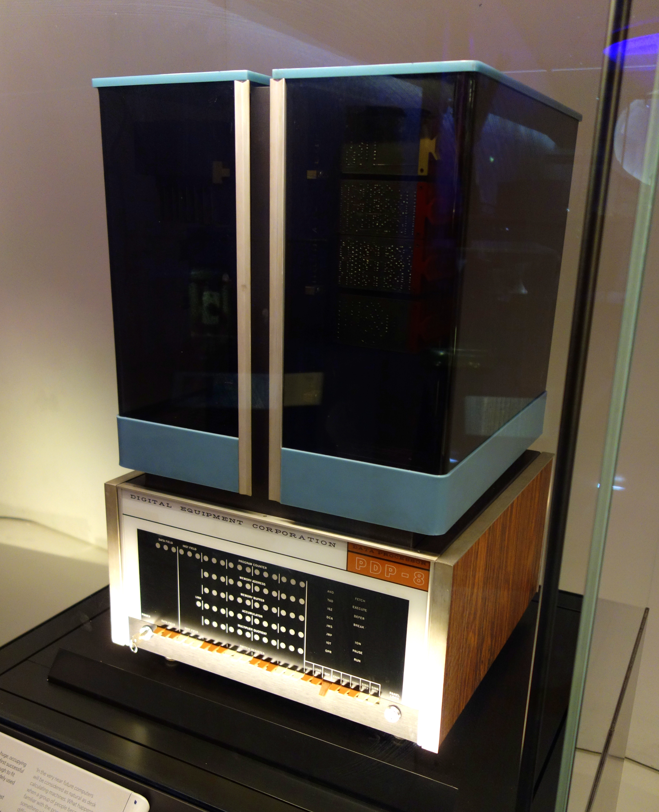
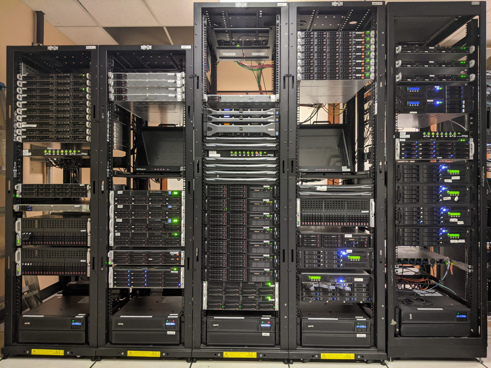
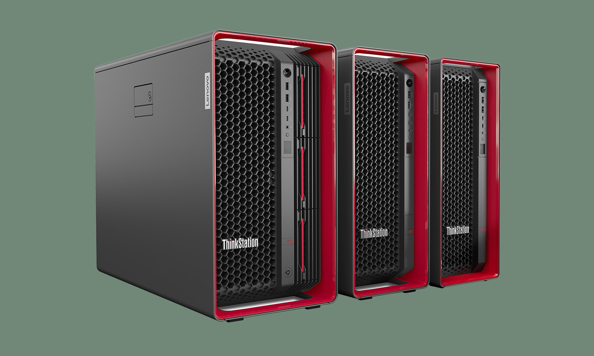
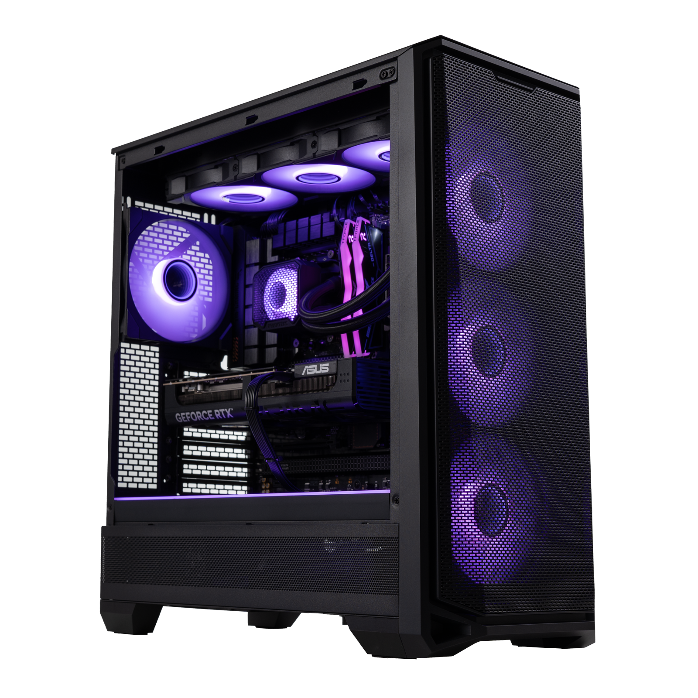

| Types of Computers | Name/Brand | CPU | Memory | Processing Speed | Calculating Power | Working Principle | Energy Consumption | Field of Use |
|---|---|---|---|---|---|---|---|---|
| Supercomputer | Fugaku, IBM Blue Gene | Thousands of multi-core processors | Hundreds of terabytes to petabytes | 1015-1018 FLOPS | Extremely high - performs quadrillions of calculations per second | Parallel processing and high-speed computation for scientific data | Very high (up to 30 MW) | Scientific research, climate modeling, and complex simulations |
| Mainframe Computers | IBM zSeries mainframes, Unisys ClearPath | Multi-core, multi-threaded CPUs | Hundreds of GB to several TB | 100,000–50,000 MIPS | Very high - handles millions of transactions per second | Centralized data handling and multi-user processing | High (hundreds of kW) | Banking, government data centers, large enterprises |
| Mini Computers | IBM AS/400, PDP-11 | Mid-range processors, 16-64 cores | Tens to hundreds of GB | 104-106 MIPS | Moderate - suitable for small organizational tasks | Multi-user, time-sharing systems | Moderate (tens of kW) | Departmental servers, laboratories, industrial control |
| Server | Dell PowerEdge, HPE ProLiant | 8–64 cores, 2–4 GHz | Hundreds of GB to few TB | 2–4 GHz per core | High - manages multiple simultaneous requests | Network-based resource and data management | Moderate to high (hundreds of watts to few kW) | Web hosting, databases, cloud storage |
| Workstations | Lenovo ThinkStation, HP Z-Series | High-end CPU and GPU (8-32 cores) | 32–512 GB | 3–5 GHz | High - optimized for single-user computational tasks | Single-user system for high-performance computing | Moderate (hundreds of watts) | Engineering, CAD, design, animation |
| Micro Computers | Dell XPS, Apple MacBook | 4–16 cores | 8–64 GB | 2–4 GHz | Low to moderate - for general-purpose tasks | Single-user, microprocessor-based operation | Low (50–300 W) | Home, office, education, entertainment |
| Types of Computers | Sample Image | Description | Usage |
|---|---|---|---|
| Supercomputer |  |
A supercomputer is the fastest computer in terms of processing power. It operates at over the highest operational rate for computers. | It is mostly used for complex computations and tasks that require massive data processing such as scientific research, climate modeling, and more. |
| Mainframe Computers |  |
Mainframe computers are large and expensive computers that are capable of supporting hundreds or thousands of users simultaneously and process vast amounts of data quickly. | Banking, government data centers, large enterprises |
| Mini Computers |  |
A minicomputer is a smaller-sized computer, less expensive than mainframes or supercomputers but still expensive and more powerful than a personal computer. It is capable of supporting numerous users and handling medium tasks. | They are mostly used in smaller business and industrial applications such as departmental servers, laboratories, and database management. |
| Server |  |
It's a computer program or device that allows services to another computer program and its user, called the client. It has three categories: analog computers, digital computers, and hybrid computers. | They are mostly used in web hosting, databases, and cloud storage. |
| Workstations |  |
A workstation is specifically intended for technical and scientific applications. It is a single user computer that is connected to a local area network and runs multi-user operating systems. | Engineering, CAD, design, animation |
| Micro Computers |  |
Microcomputers are also known as personal computers (PCs). This is a category of computers designed for individual usage; they are characterized by small size, compact dimensions, processing capability, compatibility, internet access, portability, low cost, and versatility. | They are mostly used in home, office, education, and entertainment. |